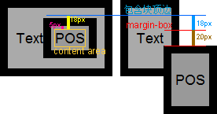
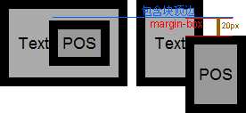

根据 W3C CSS2.1 规范中的描述，'margin-top' 与 'margin-bottom' 特性可以作用于行内非替换元素，但将不会产生效果。而行内非替换元素的 padding、border、margin 并不参与行框高度的计算，其垂直方向的 padding、border、margin 始于其内容区域（content area）的顶部和底部，而不是其行高（'line-height' 特性）。而行高仅用来计算行框的高度。
当绝对定位元素的 'top'、'right'、'bottom'、'left' 特性没有设置，为默认的 auto 时，绝对定位的元素可能会被放置在其 "静态位置" 上。 "静态位置" 粗略地说是指元素如果在正常流中的位置。具体来说： "静态位置" 的包含块是若一个元素的 'position' 为 static 、'float' 为 none 时生成元素的第一个框的假想框。而 'top' 特性为 auto 时将以下面的规则计算其值：
静态位置中的 'top' 为包含块的内部顶边到假想框的顶部边距边（top margin-box）的距离。
关于 行内元素 及 静态位置 的更多资料，请参见 CSS2.1 规范 8.3 Margin properties、10.8.1 Leading and half-leading、10.6.1 Inline, non-replaced elements、10.6.4 Absolutely positioned, non-replaced elements 中的内容。
对于行内元素绝对定位后静态位置中的 'top' 特性的计算值，IE6 IE7 IE8(Q) 会将其计算为静态位置下 content area 距包含块顶边的距离（即半差异的高度），其他浏览器则计算为 0。
当包含块的 'line-height' 特性值不为默认的 normal，对其内的行内元素设置了绝对定位后，若没有对其设置 'top'、'left' 等偏移量特性，不同浏览器间对于定位元素的位置计算会产生差异。
| IE6 IE7 IE8(Q) |
|---|
结合上述规范内容，我们写一段测试代码：
<div style="font:18px Arial; padding:10px; border:10px solid; line-height:57px; background:#AAA;
float:left;"> <div style="background:#DDD;"><span>Text</span><span
style="position:absolute; margin:20px 0; border:10px solid;
background:#999;">POS</span></div> </div>
最外层 DIV 元素设置了 ’line-height:57px‘ ，由于 'line-height' 特性具备继承性，则其内子孙元素均拥有此特性。内部有两个 SPAN 元素，第一个位于普通流中，第二个为绝对定位，但是没有设置其偏移量特性，所以其定位将使用其静态位置，同时此元素设置了上下外边距、边框。
若绝对定位的 SPAN 元素位于普通流中，则运行结果应该为：
下面就分析在各浏览器中行内元素绝对定位后的静态位置的 'top' 特性计算的实际差异。
<!DOCTYPE html> <html> <head> <style> body { margin:20px; font:18px Arial; }
.container { padding:10px; border:10px solid; line-height:57px; background:#AAA; float:left; } .inline {
background:#999; margin:20px 0; border:10px solid; padding:5px; } .pos { position:absolute; }
</style> <div class="container" style="margin-right:10px;">
<span>Text</span><span class="inline">POS</span> </div> <div
class="container"> <span>Text</span><span class="inline pos">POS</span>
</div> </body> </html>
测试代码结构与上一段中的类似，左右两组对行内元素绝对定位前后的位置作对比。
这段代码在不同浏览器中运行结果如下：
| IE6 IE7 IE8(Q) | IE8(S) Firefox Chrome Safari Opera |
|---|---|
|  |  |
这里可以看到所有浏览器对于 'top' 特性的计算值均与 W3C 规范有出入。
对于包含块 'line-height' 特性为默认的 normal 时，各浏览器没有差异。
在使行内元素绝对定位的时候，要注意其行高对静态位置带来的影响，明确设置定位的元素偏移位置。
| 操作系统版本: | Windows 7 Ultimate build 7600 |
|---|---|
| 浏览器版本: |
IE6
IE7 IE8 Firefox 3.6.8 Chrome 6.0.472.0 dev Safari 5.0 Opera 10.60 |
| 测试页面: | inline_abs.html |
| 本文更新时间: | 2010-07-27 |
absolute inline margin border box line-height top 绝对定位 行内 行高 边距